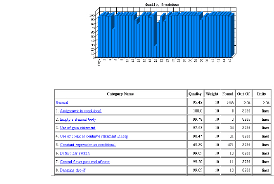

Report Tab
For more information on the QAR, see Quality Assessment Reports.
When you click the Report tab in the right pane of the Caliper window, the QAR for your selected file or project displays. You may want to widen the right pane window to view the entire width of the report.
Note: Once you click the Report tab, new Browser and Report tabs appear at the bottom of the right pane so that you may toggle back and forth between the report and Settings views.
The following shows a sample section of a QAR, viewed from the Report tab:
